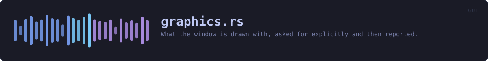

crates/veilvoice-gui/src/graphics.rs
veilvoice-gui · 158 lines · read the source here · or on GitHub
What the window is drawn with, asked for explicitly and then reported.
Why this is not left to a default
Drawing went through whatever eframe::NativeOptions::default() happened to choose. That was the right backend by luck rather than by decision: the defaults are a property of the version of eframe in Cargo.lock, and an upgrade can move them without a single line of this project changing. A release that silently stopped using the GPU would look exactly like a release that got slower for no reason.
So the four choices that decide how a frame reaches the screen are named here, with the reasoning beside each one, and a test asserts the values rather than trusting them to stay put.
Hardware acceleration is preferred, not required
Preferred asks the platform for a GPU context and accepts a software one if it cannot give you a GPU. Required refuses to start without hardware.
Required is the wrong choice here and it is worth saying why, because it sounds like the stronger setting. A virtual machine, a remote desktop session, a server with no graphics card and a laptop that has handed the wrong adapter to a hybrid-graphics driver all refuse a hardware context. On Required every one of those becomes a program that does not open at all. A privacy tool that will not run is not more private, and somebody anonymising a recording over SSH with X forwarding has a real reason to be doing it there. Software rendering is slower and it works.
What is actually reported
describe reads the context that was really created, not the request. It uses glow's parsed version, which is a safe call: this crate forbids unsafe code and nothing here is worth making an exception for. The vendor string it returns comes from the driver, so somebody reporting a slow window can say which driver produced it, and 3.3 on Mesa and 4.6 on a discrete card are different conversations.
WHAT THIS FILE CONTAINS
158 lines defining 2 functions (2 public), 0 types and 3 constants. Everything below is read out of the source, so it cannot disagree with the code.
What happens when it runs. These are the ways in: public, and nothing else in this file calls them, so they are what an outside caller reaches first.
describeline 68 · One line for the About tab, and for a bug report.optionsline 94 · The options the window is created with.
WHAT CALLS WHAT
The functions this file defines, and the calls between them. An edge means the callee's name appears, called, inside the caller's body. This is a syntactic reading, not a type-resolved one.
The same graph as Mermaid source
%%{init: {"theme":"base","themeVariables":{"background":"#1a1b26","primaryColor":"#1f2335","primaryTextColor":"#c0caf5","primaryBorderColor":"#7aa2f7","secondaryColor":"#16161e","tertiaryColor":"#16161e","lineColor":"#737aa2","textColor":"#c0caf5","mainBkg":"#1f2335","nodeBorder":"#7aa2f7","clusterBkg":"#16161e","clusterBorder":"#2f3549","fontFamily":"ui-monospace, SFMono-Regular, Consolas, monospace","fontSize":"14px"}}}%%
flowchart TD
n_describe(["describe<br/>line 68"])
n_options(["options<br/>line 94"])
click n_describe href "https://github.com/tilas01/veilvoice/blob/main/crates/veilvoice-gui/src/graphics.rs#L68" "open the source"
click n_options href "https://github.com/tilas01/veilvoice/blob/main/crates/veilvoice-gui/src/graphics.rs#L94" "open the source"
classDef entry fill:#1f2335,stroke:#7aa2f7,color:#c0caf5
class n_describe,n_options entryThis site loads no third-party script, so it cannot run Mermaid; the diagram above is the same nodes and edges drawn by the generator instead. GitHub renders the source below directly.
ITEMS
| Item | Line | Documentation |
|---|---|---|
BACKEND pub const | 47 | The rendering backend. |
VSYNC pub const | 54 | Whether frames wait for the display. |
MULTISAMPLING pub const | 61 | Multisampling, off. |
describe pub fn | 68 | One line for the About tab, and for a bug report. |
options pub fn | 94 | The options the window is created with. |